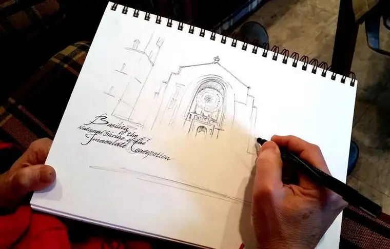

A couple months back, while serving as a fill-in host for Real Presence Radio, I had a chance to interview local artist Karen Bakke about an upcoming adventure.
{kind=link}
Karen has been making a visual account of her world since her earliest years, when a teacher noticed her artistic talent and encouraged her to pursue art as a vocation.
As a lifelong, faithful Catholic, Karen has a heart for God’s beautiful unfolding story of life through His people, and is masterful at depicting these life-giving scenes, whether through the murals she creates or the canvassed paintings that come to life at her hands.
Later last year, Karen began feeling inspired to do something special with her gifts, and a prayer led her to wonder what it would be like to sketch the experience of the 2015 March for Life. We almost always have the story in photographs and news print in some fashion, but what might she contribute, through her art, that could show another, completely visual, side of the story?
With this on her heart, Karen connected with a group of Catholic high school students here in Fargo — Shanley Teens for Life — and asked their advisers whether she could accompany them on their journey to the March in Washington, D.C., to create a sketched, visual account of the journey.
 |
| Karen’s sketch pre-trip of the Basilica of the Immaculate Conception, DC |
{kind=link}
The powers that be said, “Yes,” so in a couple of days, Karen will board one of eight buses in a North Dakota entourage heading East to carry out her artistic mission to sketch for life.
At the end of it all, Karen will find a way to pull some of the pieces from this quest into something life-giving that others will be able to absorb and enjoy.
As a local faith writer, I was assigned by the editor of our diocesan publication, New Earth, to trail Karen and write a story about her visual journey through the March. I’m really looking forward to keeping an eye on Karen and how she’s using her art to document this story. This year, our school was selected out of hundreds to carry the lead banner of the march along Constitution Avenue — an annual event that takes place on behalf of the women, babies and families whose lives are forever altered by abortion every day in our nation.
I look forward to sharing more with you soon. For now, would you join us in prayer for the success of this pilgrimage? I’ll be going as both writer and floating chaperone, helping to play a small role in ensuring those who participate from our corner of the world will have a life-changing experience.
I’ve done this trip one other time, two years ago, and it was one of the most spiritually enriching experiences of my life. This year will be a different journey of course, and right now, I am looking at the blank pages that, in a week’s time, will be filled to the brim.
There’s also a chance I’ll be interviewed on EWTN about the book I’ve helped write that will be coming out soon, so if you can, watch the coverage from home and maybe you’ll see me in my winter gear before the March begins.
Thanks for any prayers you might offer for this pilgrimage. Most of all, I want to glorify God along the way and look for the signs of what He wants me to see so I can share what He wants you to see with you.
Q4U: How has art transformed you and your faith journey?